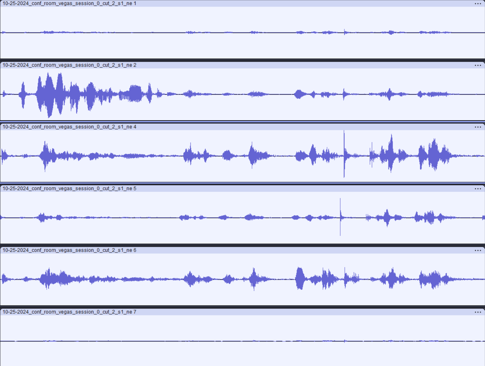
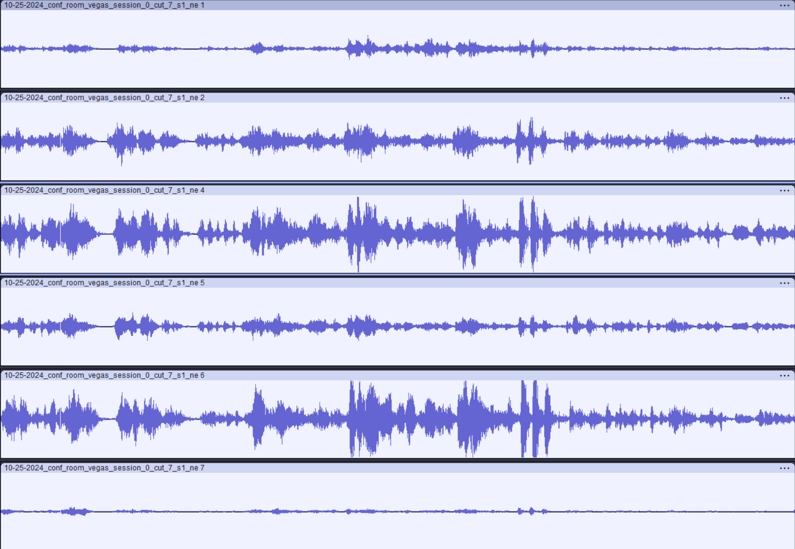
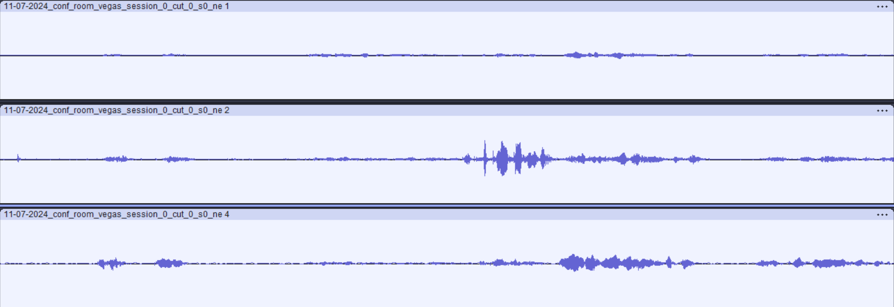
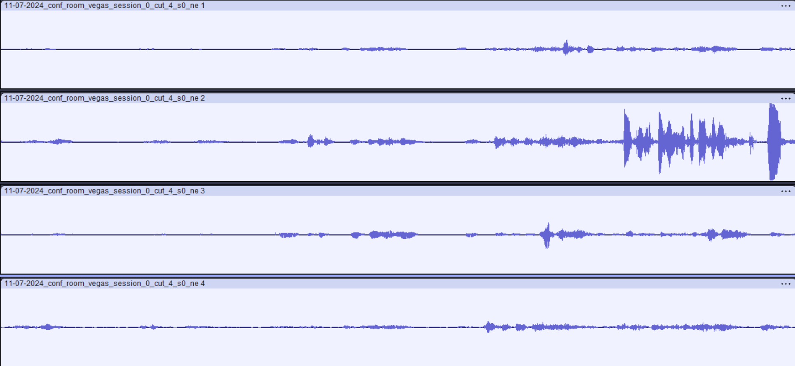

Anonymous authors
The increasing number of microphone-equipped personal devices offers great flexibility and potential using them as ad-hoc microphone arrays in dynamic meeting environments. However, most existing approaches are designed for time-synchronized microphone setups, a condition that may not hold in real-world meeting scenarios, where time latency and clock drift vary across devices. Under such conditions, we found transform-average-concatenate (TAC), a popular module for neural multi-microphone processing, insufficient in handling time-asynchronous microphones. In response, we propose a windowed cross-attention module capable of dynamically aligning features between all microphones. This module is invariant to both the permutation and the number of microphones and can be easily integrated into existing models. Furthermore, we propose an optimal training target for multi-talker environments. We evaluated our approach in a multi-microphone noisy reverberant setup with unknown time latency and clock drift of each microphone. Experimental results show that our method outperforms TAC on both iFaSNet and CRUSE models, offering faster convergence and improved learning, demonstrating the efficacy of the windowed-cross-attention module for asynchronous microphone setups.
| Description | Mixture | CRUSE-WCA | Input streams |
|---|---|---|---|
| Example 1 |
 |
||
| Example 2 |
 |
||
| Example 3 |
 |
||
| Example 4 |
 |